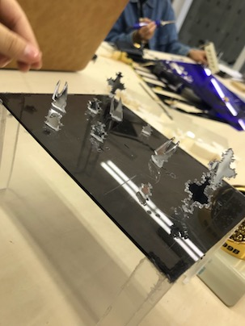

このページでは接合のチームで行ったことをfabbleから引用しつつ、私なりに付け足したり、
この班で私の行った事や個人の感想を書き込みました。

個人意見:初めに必要な木材集めを担当しましたが捨てられた画材がある場所などに行きましたが、 あまり目新しいものがなくて残念でした。ですが、ウルトラでの材料提供のおかげで助かりました！
木材で椅子を作ることが目標
個人意見：担当したのは木材を切る。キリで穴あける。などをみんなで担当しましたが主にしたのは木材の穴あけです。 まだ慣れない作業だったので怪我人が出たのが反省点です。

個人意見：木材で作ったのでデザインとして携帯のカバー部分を座る部分に貼り付けました。 でもデザインなどの面白さやその場にあった材料しか使っていないためにあまり座り心地があまりよくなかったです。
使った椅子のネジ部分を取り外せるか インパクトドライバーで確認しました 取り外すことはできたけど 取り外した時に周りが傷み 完全に綺麗な状態にはなりませんでした
個人意見：少しだけネジ外しに関わりました。元々固定に使ったネジを外したので完璧に真っ直ぐにネジが入ってないので、 戻す時も周りにヒビなどが入りました。
金属の鉄板同士で溶接して 取れないようにしようとしました。 が、溶接はライセンスがいるようで断念 考えた結果、プラスチック同士をホットエアガンで 接合することにしました。 頑張ったけれど接合できたのはこれだけ ホットエアガンの口が大きく。 熱風が分散するのが原因だと思いました。
個人意見：ハンダゴテを担当しましたが、 初めての事ばかりなのでとても難しかったです。
やること
個人意見：反省点は、場所の設置が真ん中にしなかったため見ずらかったこと、 そして体験者が多くやるペースがバラバラになってしまい、見る側からわかりずらくなってしまいました。
担当意外として、プラスチックの素材にも挑戦しました。 それによるハンダゴテなどでの「切断」と熱風などで「曲げる」事にも挑戦しました！ 